Энтропия тушунчаси ва унинг кўлланиши
Тасодифий ходисаларнинг мухим хоссаси, ходисаларнинг рўй беришига тўла ишончнинг йўклиги, тажриба ходисаларининг бажарилишида маълум аникмасликларнинг келиб чикишидир. Бирок бу аникмасликларнинг даражаси хар хил холатлар учун турлича бўлади. Агар тажриба “Биринчи учрайдиган карганинг рангини аниклаш” бўлса, у холда тўла ишонч билан айта оламизки, унинг ранги кора бўлади, гарчанд зоология фани ок каргаларнинг баъзида учраб туришини хам тасдикласада, бирор киши биринчи учрайдиган карганинг ранги кора бўлишига шубхаланиши эхтимолдан холи. Яна бир тажриба, биринчи учрайдиган кишининг чапакай ёки чапакай эмаслигини аниклашдан иборат бўлса, бу тажриба натижасини олдиндан деярли иккиланмасдан айтиш мумкин, лекин бу ерда натижа тўгрилигидан хадиксираш биринчи тажрибага караганда асослидир. Ёки янада кийинрок бўлади, шахар кўчасида биринчи учрайдиган кишининг эркак ёки аёл киши бўлишини олдиндан айтиб бериш. Лекин бу тажрибанинг аникмаслик даражаси лотерея билетларининг кайси бирига ютук чикишини олдиндан айтиб бериш аникмаслик даражасидан кичикдир. Чунки хар холда шахар кўчасида биринчи учрайдиган киши эркак киши бўлади деб олдиндан айтиб, тўгри айтганлигига ишонч хосил килиш мумкин, бирок охирги тажрибада бундай таваккал килиб бўлмайди.
Амалиёт учун турли тажрибаларнинг аникмаслик даражаларини микдорий бахолаш, уларни шу томондан, яъни аникмаслик даражаларини солиштириш мухимдир. Аввал k-тенг эхтимолли натижаларга эга тажрибаларни карашдан бошлаймиз. Кўриниб турибдики хар бир бу каби тажрибаларнинг аникмаслик даражаси k сони билан аникланади: агар k=1 бўлса тажриба натижаси тасодифий бўлмайди, к нинг киймати катта бўлганда эса, яъни кўп сонли хар хил натижалар мавжуд бўлганда, тажриба натижаларини олдиндан айтиш етарлича кийинчилик тугдиради. Шундай килиб, аникмаслик даражасининг микдорий характеристикаси k га боглик, яъни k сонининг f(k) функцияси бўлади. Шу билан бир вактда k=1 бўлганда функция нолга айланиши ва k ошиши билан функция киймати хам ошиши керак.
f(k) – функцияни тўларок аниклаш учун унга кўшимча
талаблар кўйиш керак. Иккита боглик бўлмаган 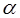 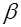 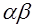
f(k*l)= f(k)+ f(l) (4)
Охирги шартлар k та тенг эхтимолли натижаларга эга тажрабанинг аникмаслик даражаси сифатида log k сонини кабул килиш фикрига олиб келади. Аникмаслик даражасининг бундай аникланиши k=1 бўлганда функция нолга айланиши ва k ошиши билан функция хам ошиши шартлари мувофик келади (яъни логарифмик функция k аргументнинг f(k*l)= f(k)+ f(l), f(1)=0 ва барча k>l ларда f(k)> f(l) шартларни каноатлантирадиган ягона функциясидир).
Аникмаслик даражасининг кўлланишларида одатда асоси икки бўлган логарифмик функциялар ишлатилади (яъни бошкача килиб айтганда f(k) = log2 k). Бу эса ўз навбатида аникмаслик даражасининг ўлчов бирлиги сифатида иккита тенг эхтимолли натижага эга тажриба аникмаслиги (яъни танга ташланганда унинг икки томони ёки ха – йўк саволларига жавоб берадиган тажрибалар) кўлланилаётганини кўрсатади. Келгусида доим log k= log2 k дан фойдаланамиз.
к та тенг эхтимолли натижаларга эга тажраба учун эхтимолликлар жадвали куйидагича кўринишга эга:
1-жадвал
|
Тажриба натижалари |
A1 |
A2 |
A3 |
... |
Ak |
|
эхтимолликлари |
1 k |
1 k |
1 k |
... |
1 k |
Тажрибанинг умумий аникмаслиги шартга кўра log k га тенг, у холда хар бир алохида 1/k эхтимолликка эга бўлган натижа 1/k logk = -1/k log 1/k аникмасликлар олиб келади деб хисоблаш мумкин. Лекин у холда тажриба натижалари куйидагича эхтимолликка эга бўлган жадвал учун:
2-жадвал
|
Тажриба натижалари |
A1 |
A2 |
A3 |
|
эхтимолликлари |
1 2 |
1 3 |
1 6 |
A1,
A2, A3 натижалар мос равишда -1/2
log 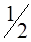
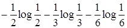
Шунга ўхшаш, умумий холатда куйидагича эхтимолликлар жадвалига эга тажриба учун;
3-жадвал
|
Тажриба натижалари |
A1 |
A2 |
A3 |
2e2e. |
Ak |
|
эхтимолликлари |
p(A1) |
p(A2) |
p(A3) |
2e2e. |
p(Ak) |
Аникмаслик ўлчови куйидагига тенг бўлади
- p(A1)log p(A1) – p(A2)log p(A2) – p(A3)log p(A3) -...- p(Ak)log p(Ak).
Таъриф. Бу охирги сонни тажрибанинг энтропияси деб аталади ва H() билан белгиланади.
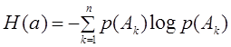
Куйида H() энтропия хоссалари билан танишамиз.
Энг аввало шуни айтиб ўтиш керакки
энтропия манфий киймат кабул кила олмайди, хакикатан хам, 0 p(A)
p(A) 1 доим бажарилишидан log p(A) киймат мусбат
бўлмайди ва демак -p(A)log p(A) манфий бўла олмайди.
1 доим бажарилишидан log p(A) киймат мусбат
бўлмайди ва демак -p(A)log p(A) манфий бўла олмайди.
Агар р жуда кичик бўлса, у холда –log p мусбат катта сон бўлганда хам -plog p кўпайтма етарлича кичик бўлади. Хакикатан хам, масалан, р=1/2n бўлсин, у холда
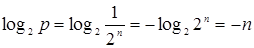 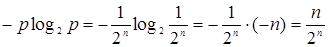
Бундан кўринадики n нинг
катта кийматларида 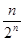 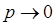
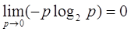
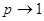
-plog p факатгина p=0 бўлганда (яъни А ходиса бажарилмаса) ёки p=1 (яъни А тўла ишончли ходиса) бўлганда 0 га тенг бўлар экан, кўриниб турибдики, тажрибанинг энтропияси Н() p(A1), p(A2), p(A3), ..., p(Ak) эхтимолликларнинг факат биттаси 1 га тенг бўлиб, колганлари 0 га тенг бўлгандагина 0 га тенг бўлади (чунки p(A1)+ p(A2)+ p(A3)+...+ p(Ak)=1 эди ). Бу холат эса Н() микдор аникмаслик даражаси мазмуни билан тўгри келади, чунки факат шу холатда тажриба умуман хеч кандай аникмасликка эга эмас.
Мураккаб ходисалар энтропияси. Шартли энтропия
ва иккита боглик бўлмаган тажрибалар ва куйидагича жадвалларга эга бўлсин. тажриба учун:
4-жадвал
|
Тажриба натижалари |
A1 |
A2 |
A3 |
... |
Ak |
|
эхтимолликлари |
p(A1) |
p(A2) |
p(A3) |
... |
p(Ak) |
тажриба учун:
5-жадвал
|
Тажриба натижалари |
В1 |
В2 |
В3 |
... |
Вl |
|
эхтимолликлари |
p(В1) |
p(В2) |
p(В3) |
... |
p(Вl) |
ва тажрибаларнинг бир вактда бажарилишидан ташкил топган мураккаб тажрибани карайлик. Бу тажриба kl та натижага эга бўлади:
А1B1, A1B2,..., A1Bl; A2B1, A2B2,..., A2Bl; ... ; AkB1, AkB2, ..., AkBl.
бу ерда, масалан, А1B1 тажриба А1 натижага тажриба эса B1 натижага эга эканини англатади. Кўриниб турибдики тажрибанинг аникмаслиги ва тажрибалардан хар бирининг аникмаслигидан катта.
Куйидаги тенгликни исботлаймиз
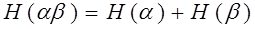
(энтропияларни кўшиш коидаси), бу тенглик энтропияни аникмаслик даражаси маъносида келишини яхши мослаштиради. Н() нинг таърифига кўра куйидагига эгамиз:
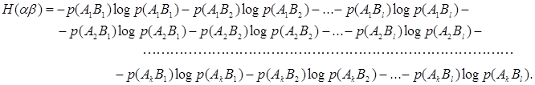
и тажрибалар боглик бўлмаганлиги учун, p(A1B1)=p(A1) p(B1), p(A1B2)=p(A1) p(B2), (8) ва хакоза. Шунинг учун юкоридаги тенгликнинг биринчи сатрини куйидагича ёзиш мумкин
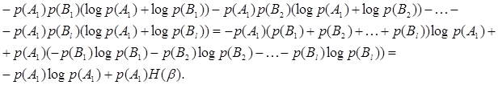
бу
ерда 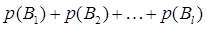
2- ...к-сатрлар учун хам худди шундай кўринишда бўлади ва демак, куйидагига эга бўламиз
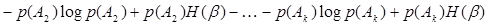
ёки
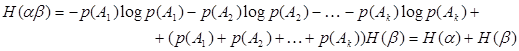
бу ерда 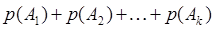 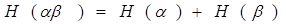
Фараз килайлик ва тажрибалар богликли. Бу холда мураккаб тажрибанинг энтропияси ва тажрибалар энтропиялари йигиндисига тенг бўлади деб айта олмаймиз. Хакикатан хам, бу ерда иккинчи тажрибанинг натижаси биринчи тажрибанинг натижаси билан боглик бўлади. Шундай бўлса, умумий холат учун мураккаб тажрибанинг энтропияси Н() нимага тенг бўлишлигини кўриб чикамиз.
Юкорида богликсиз бўлган тажрибалар учун келтирилган Н() мураккаб тажрибанинг энтропияси формуласини кайтарамиз, яъни
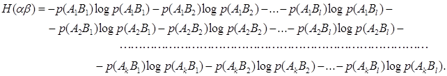
бу ерда А1, А2, ..., Ак ва В1, В2, ..., Вl лар мос холда ва тажрибаларнинг натижалари.
Бирок бу ерда p(A1B1) ни p(A1) p(B1) га p(A1B2) ни эса p(A1) p(B2) га ва хакоза каби алмаштириш эмас, балки ходисаларнинг шартли эхтимоллигидан келиб чикиб, яъни p(A1B1)=p(A1) pА1(B1), p(A1B2)=p(A1) pА1(B2) алмаштиришларни оламиз, у холда (9) формуланинг биринчи сатри:
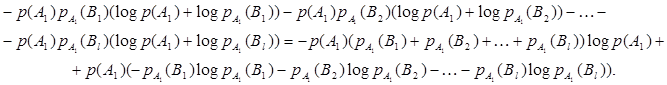
Бу ерда 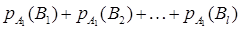 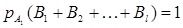
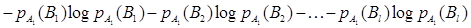
йигинди тажрибанинг А1 ходиса рўй
берганда бажарилиши энтропиясини ифодалайди (бошкача килиб айтганда тажрибанинг энтропияси тажриба натижаларига боглик, чунки тажрибанинг алохида наижаларининг руй бериш
эхтимоллиги тажриба натижаларига
богликдир). Бу ифодани тажрибанинг
А1 шарт бажарилгандаги шартли энтропияси деб аталади ва
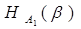
Шундай килиб, Н() ифоданинг биринчи сатрини куйидагича ёзишимиз мумкин:
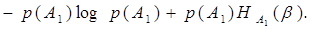
худди шунингдек, 2 чи ... к чи сатрлар учун хам куйидагига эга бўламиз:
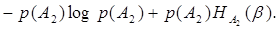
. . . . . . . . . . . . . . . . . . . . . . . . . . . . . . . . . . . . . . .
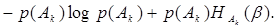
бу ерда 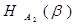 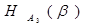 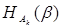
Юкоридаги мулохазалардан куйидаги формулага эга бўламиз:
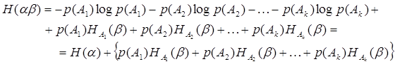
маълумки охирги ифоданинг биринчи
хади тажрибанинг
энтропияси. Иккинчи кисмида эса, тасодифий
микдорнинг ўрта киймати бўлиб, 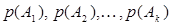 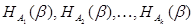 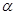
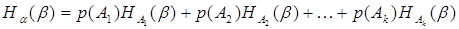
шундай килиб куйидагига эга бўламиз:
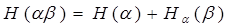
Бу тенглик мураккаб тажрибанинг энтропиясини аниклаш учун умумий коида хисобланади.
Шуни айтиб ўтиш керакки келгусида
кўриладиган масалаларда 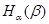
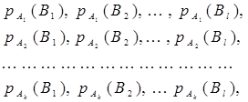
Куйида эса 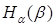
1.
Агар 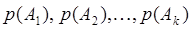 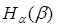 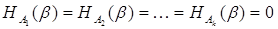
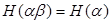
2. Агар ва тажрибалар ўзаро боглик бўлмаса, у холда
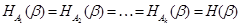 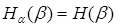
бунга кўра
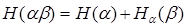
формула
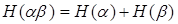
оддий кўринишга келади.
3. - шартли энтропия барча холатларда нол билан тажрибанинг шартсиз энтропияси оралигида бўлади:
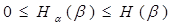
ва мураккаб тажрибалар бир-биридан фарк килмагани учун
яъни
(17)
(18)
бундан келиб чикадики, хусусий холда ва тажрибаларнинг энтропиялари ва ларни хамда тажриба бажарилаганда тажрибанинг энтропияси ни билсак, тажриба бажарилганда тажрибанинг энтропияси ни аниклаш мумкин:
. (19)
Бу ерда . Демак, юкоридаги (17) формуладан куйидагига эга бўламиз:
(20)
бу тенгсизликбўлганда шартли энтропияни микдорини аникрок бахолайди
(21)
тенглик эса бўлганда ўринли, яъни тажрибанинг натижаси тажриба натижасини тўла аникласа, бўндай холларда доим бўлади.
Энтропия тушунчасига хулоса сифатида куйидагини мисол келтирамиз.
Мисол. Кимдир 100 дан катта бўлмаган 2 та сонни ўйлаган бўлсин, бу сонларни топиш учун, агар хар бир берилган саволга “ха” ёки “йўк” деб жавоб берилса, нечта савол бериш кераклиги топилсин.
Ечиш. Бу холатни тажриба деб карасак, у холда
натижага эга бўлиб, бу 2 та сонни топиш учун 4950 холатни кўриб чикиш керак. Агар тажрибанинг натижалари тенг эхтимолликка эга эканлигини эътиборга олсак, тажрибанинг энтропияси учун Н()=?og4950?12.27 кийматга эга бўламиз, яъни (бу ерда log 2 асосга кўра олинади, чунки жавоб ха-йўк) кўриш мумкинки 13 та савол бериб, ўйланган сонларни топиш мумкин.
Машклар.
1. Рустили харфлари частотаси жадвалидан фойдаланиб, матнда битта рус харфининг аникмаслик даражаси (энтропияси) топилсин.
2. Агар рус алифбоси харфлари бир-хил эхтимолликда таксимланган бўлса, у холда рус матнида битта харфнинг иштирок этиш аникмаслик даражаси (энтропияси) топилсин.
3. Иккита яшик бўлиб, хар бирида 20 тадан шар бор. Агар биринчи яшикда 10-та ок, 5-та кора ва 5-та кизил шарлар, иккинчи яўикда эса 8-та ок, 8-та кора ва 4-та кизил шарлар бўлса, кайси бир ящикдан шар олиш ходисаси ноаник хисобланади. Бу ерда хар-бир яшикдан биттадан шар олинади.
4. Битта яшикда n –та шар бўлиб, m- таси кора n – m таси ок рангли бўлсин. Агар ва кетма-кет иккита шар олиш ходисалари бўлса, , , топилсин.